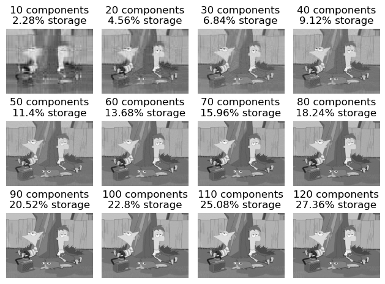

from matplotlib import pyplot as plt
import numpy as np
import PIL
import urllib
def read_image(url):
return np.array(PIL.Image.open(urllib.request.urlopen(url)))
def to_greyscale(im):
return 1 - np.dot(im[...,:3], [0.2989, 0.5870, 0.1140])Unsupervised Learning with Linear Algebra
In this blog post, we use linear algebra methods for unsupervised learning with two kinds of data: images and graphs. In part I, we implement and experiment with compressing an image using singular value decomposition (SVD). In part II, we implement and experiment with community detection in a graph using spectral clustering.
Part I: Image Compression with the Singular Value Decomposition
In this part of the blog post, we will implement and experiment with compressing a image using singular value decomposition (SVD). To make this simplier for us, the image we will be compressing will be in greyscale.
Selecting Image and Converting to Greyscale
In order to compress an image using singular value decomposition (SVD), we first need to select one!

Below are functions that will allow us to save this image for our usage and convert it to greyscale.
As seen through the image comparison below, our read_image and to_greyscale functions work as anticipated.
import pathlib
#url = pathlib.Path("../phineas_and_ferb.png").as_uri()
url = "https://i.kym-cdn.com/photos/images/facebook/000/944/663/6a7.png"
img = read_image(url)
fig, axarr = plt.subplots(1, 2, figsize = (7, 3))
grey_img = to_greyscale(img)
axarr[0].imshow(img)
axarr[0].axis("off")
axarr[0].set(title = "original")
axarr[1].imshow(grey_img, cmap = "Greys")
axarr[1].axis("off")
axarr[1].set(title = "greyscale")[Text(0.5, 1.0, 'greyscale')]
Reconstruct Image Using SVD
"""
Perform an experiment that reconstructs greyscale image (img) with
several different values of k.
"""
def svd_experiment(img):
rows = 3
columns = 3
fig, axarr = plt.subplots(rows, columns)
# n * k + k + k * m
for i in range(rows):
for j in range(columns):
k = (i * 3 + j + 1) * 10
img_title = str(k) + " components"
axarr[i][j].imshow(svd_reconstruct(img, k), cmap="Greys")
axarr[i][j].axis("off")
axarr[i][j].set(title=img_title)
def compare_images(A, A_):
fig, axarr = plt.subplots(1, 2, figsize = (7, 3))
axarr[0].imshow(A, cmap = "Greys")
axarr[0].axis("off")
axarr[0].set(title = "original image")
axarr[1].imshow(A_, cmap = "Greys")
axarr[1].axis("off")
axarr[1].set(title = "reconstructed image")from matplotlib import pyplot as plt
import numpy as np
import warnings
"""
Given a greyscale image (img) and the number of singular values (k) to use,
reconstruct the image from its singular value decomposition.
"""
def svd_reconstruct(img, k, epsilon = 0):
# MAKE THE MEMORY THING AN OPTIONAL ARGUMENT HERE
# Get height and width from image
# No third value in shape since img is in greyscale
height, width = img.shape
# Get the img as a 2D matrix
data = np.array(img)
# Return unmodified data if k is too large
if ((k > height) or (k > width)):
warnings.warn("WARNING: k > height or k > width of given image")
return data
# Compute a singular value decomposition (SVD)
U, sigma, V = np.linalg.svd(data)
# create the D matrix in the SVD
D = np.zeros_like(data, dtype=float) # matrix of zeros of same shape as data
D[:min(data.shape),:min(data.shape)] = np.diag(sigma) # singular values on the main diagonal
print(f"{D=}")
print(f"Shape of {D.shape=}")
print(f"{D[0,0]=}")
# User did not specify desired threshold
if (epsilon == 0):
# Approximate by using specified k components
U_ = U[:,:k] # first k columns of U
D_ = D[:k, :k] # top k singular values in D
V_ = V[:k, :] # first k rows of V
# User specified a threshold
else:
print("USER SPECIFIED EPSILON")
D_rows, D_columns = D.shape
# Check how many components have a singular value larger than epsilon
new_k = np.count_nonzero(D > epsilon) # Number of components with singular value larger than epilson
print(f"{new_k=}")
if ((new_k > height) or (new_k > width)):
new_k = min(height, width)
print(f"adjusted new_k {new_k=}")
U_ = U[:,:new_k] # first k columns of U
D_ = D[:new_k, :new_k] # top k singular values in D
V_ = V[:new_k, :] # first k rows of V
# If new_k is smaller than specified components, use new_k specified components
# if (new_k < k):
# print("USING new_k {new_k}")
# U_ = U[:,:new_k] # first k columns of U
# D_ = D[:new_k, :new_k] # top k singular values in D
# V_ = V[:new_k, :new_k] # first k rows of V
# # Otherwise, found enough components with singular value larger than threshold
# # and use the users specified k components
# else:
# print(f"USING ORIGINAL k {k}")
# U_ = U[:,:k] # first k columns of U
# D_ = D[:k, :k] # top k singular values in D
# V_ = V[:k, :] # first k rows of V
# Reconstruct and compute approximation of data
data_ = U_ @ D_ @ V_
return data_#svd_experiment(to_greyscale(img))
compare_images(to_greyscale(img), svd_reconstruct(to_greyscale(img), 219, epsilon=0))
compare_images(to_greyscale(img), svd_reconstruct(to_greyscale(img), 90, epsilon=100))D=array([[107361.80291894, 0. , 0. , ...,
0. , 0. , 0. ],
[ 0. , 13437.58425079, 0. , ...,
0. , 0. , 0. ],
[ 0. , 0. , 10010.47331741, ...,
0. , 0. , 0. ],
...,
[ 0. , 0. , 0. , ...,
0. , 0. , 0. ],
[ 0. , 0. , 0. , ...,
0. , 0. , 0. ],
[ 0. , 0. , 0. , ...,
0. , 0. , 0. ]])
Shape of D.shape=(768, 1024)
D[0,0]=107361.8029189376
D=array([[107361.80291894, 0. , 0. , ...,
0. , 0. , 0. ],
[ 0. , 13437.58425079, 0. , ...,
0. , 0. , 0. ],
[ 0. , 0. , 10010.47331741, ...,
0. , 0. , 0. ],
...,
[ 0. , 0. , 0. , ...,
0. , 0. , 0. ],
[ 0. , 0. , 0. , ...,
0. , 0. , 0. ],
[ 0. , 0. , 0. , ...,
0. , 0. , 0. ]])
Shape of D.shape=(768, 1024)
D[0,0]=107361.8029189376
USER SPECIFIED EPSILON
D[0, 0]: 107361.8029189376
D[1, 1]: 13437.584250785636
D[2, 2]: 10010.473317407475
D[3, 3]: 8335.973485937207
D[4, 4]: 7448.07328358502
D[5, 5]: 6580.332525352788
D[6, 6]: 5880.186089491119
D[7, 7]: 5252.542628847534
D[8, 8]: 4718.044274193507
D[9, 9]: 4078.831463516406
D[10, 10]: 3928.9978579610784
D[11, 11]: 3720.1954335809514
D[12, 12]: 3599.3869093878675
D[13, 13]: 3445.7474851060038
D[14, 14]: 3167.5996722104387
D[15, 15]: 3093.839058642698
D[16, 16]: 2944.8437520991647
D[17, 17]: 2881.820934298091
D[18, 18]: 2708.8565643733627
D[19, 19]: 2615.0516662633913
D[20, 20]: 2524.6167648607966
D[21, 21]: 2412.770360623219
D[22, 22]: 2394.7241546388746
D[23, 23]: 2334.659665386485
D[24, 24]: 2201.794285219379
D[25, 25]: 2113.1931025447493
D[26, 26]: 2018.973593972689
D[27, 27]: 2012.4342979742169
D[28, 28]: 1953.9862633034886
D[29, 29]: 1882.203794004853
D[30, 30]: 1871.0284231551236
D[31, 31]: 1814.0553796052009
D[32, 32]: 1781.595787082326
D[33, 33]: 1713.8916563906184
D[34, 34]: 1667.9252985256212
D[35, 35]: 1633.0460345129395
D[36, 36]: 1608.2579145381746
D[37, 37]: 1592.6711302898834
D[38, 38]: 1538.7640410933257
D[39, 39]: 1502.7400013752026
D[40, 40]: 1482.938417770099
D[41, 41]: 1455.6805734411812
D[42, 42]: 1426.201336790752
D[43, 43]: 1392.9736442327767
D[44, 44]: 1355.977538397623
D[45, 45]: 1347.5107927289064
D[46, 46]: 1312.7589513481958
D[47, 47]: 1274.596093277438
D[48, 48]: 1262.66423514038
D[49, 49]: 1252.3826866146271
D[50, 50]: 1230.5231464486499
D[51, 51]: 1195.5127129475538
D[52, 52]: 1171.6387169960137
D[53, 53]: 1162.8028837998902
D[54, 54]: 1148.664033982226
D[55, 55]: 1124.6829356578019
D[56, 56]: 1112.0688151626875
D[57, 57]: 1103.2830280152339
D[58, 58]: 1076.7559783375032
D[59, 59]: 1065.6541747130746
D[60, 60]: 1019.344313377039
D[61, 61]: 1010.257465420005
D[62, 62]: 984.0672554647323
D[63, 63]: 978.0566082994204
D[64, 64]: 948.8148358230649
D[65, 65]: 946.239935705234
D[66, 66]: 926.3178314985535
D[67, 67]: 916.6694169657412
D[68, 68]: 892.3655073592056
D[69, 69]: 886.246080647666
D[70, 70]: 863.9522303678366
D[71, 71]: 852.0169483175216
D[72, 72]: 837.5572769282626
D[73, 73]: 833.5028340564826
D[74, 74]: 822.0163959353497
D[75, 75]: 801.8280119754172
D[76, 76]: 782.310889366227
D[77, 77]: 777.8794743468948
D[78, 78]: 772.6009358691563
D[79, 79]: 757.3793257554114
D[80, 80]: 736.8302210182165
D[81, 81]: 732.4019002912436
D[82, 82]: 709.1253057352079
D[83, 83]: 705.6693991488496
D[84, 84]: 691.9325100077798
D[85, 85]: 688.9884609770219
D[86, 86]: 679.9639057906629
D[87, 87]: 677.1926899390849
D[88, 88]: 670.9208943442733
D[89, 89]: 658.8050032749787
D[90, 90]: 654.2697709157326
D[91, 91]: 639.4207378909989
D[92, 92]: 633.0354730920316
D[93, 93]: 622.9647665155401
D[94, 94]: 614.4092584086433
D[95, 95]: 601.0559914521862
D[96, 96]: 593.8857324186491
D[97, 97]: 585.7022873469523
D[98, 98]: 581.7735664028077
D[99, 99]: 570.527800788899
D[100, 100]: 564.3460998940317
D[101, 101]: 553.0919250165108
D[102, 102]: 548.599267314615
D[103, 103]: 534.5348687188848
D[104, 104]: 524.8832252554832
D[105, 105]: 517.6418672066897
D[106, 106]: 508.9115660346166
D[107, 107]: 501.8107815586226
D[108, 108]: 498.79581909976315
D[109, 109]: 493.72494077821585
D[110, 110]: 490.20880885882343
D[111, 111]: 480.4938114300012
D[112, 112]: 476.57345694282867
D[113, 113]: 465.6848637804597
D[114, 114]: 453.72175260464456
D[115, 115]: 449.7017057728058
D[116, 116]: 442.4881018095462
D[117, 117]: 438.5346461522773
D[118, 118]: 432.72260921828445
D[119, 119]: 429.5977734362094
D[120, 120]: 421.2718518045167
D[121, 121]: 412.75913584666597
D[122, 122]: 410.5666900518774
D[123, 123]: 408.0231273435735
D[124, 124]: 402.2423558351021
D[125, 125]: 396.8057879932172
D[126, 126]: 387.81852312940276
D[127, 127]: 384.4633148001355
D[128, 128]: 380.7569125983364
D[129, 129]: 372.919930768664
D[130, 130]: 367.8616148997924
D[131, 131]: 362.3041542299762
D[132, 132]: 357.3598646959431
D[133, 133]: 355.27491963664846
D[134, 134]: 353.7975274328209
D[135, 135]: 346.1145526565104
D[136, 136]: 339.4667767171482
D[137, 137]: 336.34338069081167
D[138, 138]: 332.7091015538574
D[139, 139]: 325.79955124241155
D[140, 140]: 323.2776589736128
D[141, 141]: 317.22410551960684
D[142, 142]: 315.93088354570943
D[143, 143]: 309.80064621950567
D[144, 144]: 306.2008030844055
D[145, 145]: 302.03656828292054
D[146, 146]: 293.3703098199324
D[147, 147]: 290.5726700183749
D[148, 148]: 286.99723066393807
D[149, 149]: 284.0282784612382
D[150, 150]: 282.4313177395185
D[151, 151]: 276.46558831511754
D[152, 152]: 271.48985260237555
D[153, 153]: 269.19948824354884
D[154, 154]: 266.6482646228789
D[155, 155]: 261.2633308246659
D[156, 156]: 258.2317425803115
D[157, 157]: 255.41869115547115
D[158, 158]: 252.19942119086633
D[159, 159]: 248.48431574978557
D[160, 160]: 245.4771128110874
D[161, 161]: 243.86057263617028
D[162, 162]: 238.2330320811408
D[163, 163]: 233.35573129994492
D[164, 164]: 228.24872152442333
D[165, 165]: 224.94246712550105
D[166, 166]: 222.28979985468766
D[167, 167]: 220.5234190119981
D[168, 168]: 218.29445619919616
D[169, 169]: 213.11400743184245
D[170, 170]: 212.43806898451552
D[171, 171]: 209.869879342106
D[172, 172]: 206.30300741205133
D[173, 173]: 202.06809846464273
D[174, 174]: 199.48400356153536
D[175, 175]: 197.81514993488418
D[176, 176]: 194.48636480506056
D[177, 177]: 191.89129241575793
D[178, 178]: 187.40015095083731
D[179, 179]: 186.1400831058181
D[180, 180]: 181.2083602026975
D[181, 181]: 179.51219187324418
D[182, 182]: 177.06676886405577
D[183, 183]: 173.7811066917909
D[184, 184]: 172.44856391857948
D[185, 185]: 169.74873550642482
D[186, 186]: 166.71535806880107
D[187, 187]: 165.3924650315296
D[188, 188]: 161.15920264420598
D[189, 189]: 158.9897796761289
D[190, 190]: 156.69932852602298
D[191, 191]: 155.1474245286608
D[192, 192]: 153.30430244792964
D[193, 193]: 150.6889613283825
D[194, 194]: 149.59745712792053
D[195, 195]: 145.114361340649
D[196, 196]: 143.6853143260645
D[197, 197]: 142.8345019925396
D[198, 198]: 140.7219536909653
D[199, 199]: 137.84607177814118
D[200, 200]: 135.6926484310087
D[201, 201]: 133.98376596145764
D[202, 202]: 131.08509732931736
D[203, 203]: 130.20728324964767
D[204, 204]: 127.98795933855641
D[205, 205]: 125.40103480844904
D[206, 206]: 122.52460996721456
D[207, 207]: 120.95511713524475
D[208, 208]: 118.50142853564547
D[209, 209]: 116.92228305227393
D[210, 210]: 115.04291781984944
D[211, 211]: 111.4176700025266
D[212, 212]: 110.45451700439712
D[213, 213]: 109.83979931994654
D[214, 214]: 107.71559757896438
D[215, 215]: 105.63014260582734
D[216, 216]: 103.77811074084906
D[217, 217]: 101.97013533417939
D[218, 218]: 101.35474616986512
new_k=219

Part II: Spectral Community Detection
# Karate Clubs Graph
import networkx as nx
G = nx.karate_club_graph()
layout = nx.layout.fruchterman_reingold_layout(G)
nx.draw(G, layout, with_labels=True, node_color = "steelblue")
clubs = nx.get_node_attributes(G, "club")
nx.draw(G, layout,
with_labels=True,
node_color = ["orange" if clubs[i] == "Officer" else "steelblue" for i in G.nodes()],
edgecolors = "black" # confusingly, this is the color of node borders, not of edges
) 
# Adjacency Matrix for unabled graph G
A = nx.adjacency_matrix(G).toarray()
Aarray([[0, 4, 5, ..., 2, 0, 0],
[4, 0, 6, ..., 0, 0, 0],
[5, 6, 0, ..., 0, 2, 0],
...,
[2, 0, 0, ..., 0, 4, 4],
[0, 0, 2, ..., 4, 0, 5],
[0, 0, 0, ..., 4, 5, 0]])# Symmetrize A
A = A + A.T
A[A > 1] = 1
Aarray([[0, 1, 1, ..., 1, 0, 0],
[1, 0, 1, ..., 0, 0, 0],
[1, 1, 0, ..., 0, 1, 0],
...,
[1, 0, 0, ..., 0, 1, 1],
[0, 0, 1, ..., 1, 0, 1],
[0, 0, 0, ..., 1, 1, 0]])